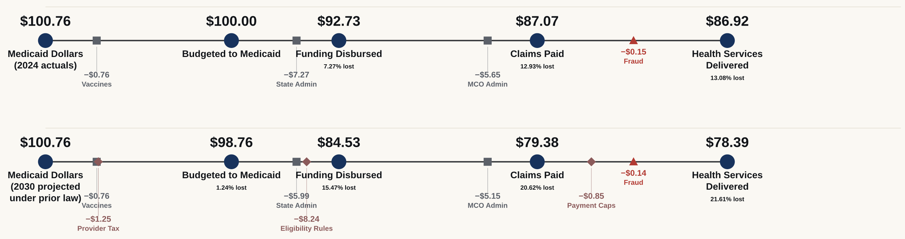
By 2030, fewer people will be enrolled in Medicaid. The providers who treat them will be paid less. The plans that manage their care will have less care to manage, and the states that run the program will have less federal money to run it with. That is what P.L. 119-21, the statute most people in Medicaid call HR-1, does.
Today, of every hundred dollars that moves through Medicaid, $86.27 reaches a health service. Under HR-1, $77.79 will.
The $13.73 that does not reach care today goes to state administration, Medicare premiums returned to the federal government, plan administration, retained earnings and a small amount of documented fraud. By 2030 the law will take a further $10.26 before care, and the share that never becomes a service will rise to $22.21.
That is the whole finding. Everything else here answers two questions about it: where do the missing dollars leave, and who is holding the bill when they do.
Behind the diagrams on these pages is a model of the Medicaid funding lifecycle. It follows a dollar through eight phases, from the appropriation that funds it to the service a person receives, and it conserves: every dollar that enters is accounted for where it leaves. The diagrams are how that model is read. They are not the work.
The model runs twice. Once on federal fiscal year 2024 as it actually flowed, the as-was view. Once on fiscal year 2030 as it would have been before HR-1, with the law subtracted provision by provision at the point where each one bites, the projected to-be view.
Both share a skeleton: same eight phases, same scale, same four anchors on the balance line beneath. A reader can lay them side by side, find their own place in the ecosystem, and understand how their world will change.
Those dollars removed from the ecosystem will not vanish. Care will go undelivered, or it will be delivered and go unpaid, or a state will find the money somewhere else. This analysis sizes what will leave the Medicaid ecosystem and says where in the lifecycle it leaves. We stop short of claiming to know where each dollar lands, because the evidence for that routing does not exist at national scale.1
Medicaid and insurance professionals and executives, expert in their own lane, reasonably new to the ones adjacent, and seeking insight into what is happening upstream and downstream of their enterprise. A hospital finance officer knows disproportionate share hospital payments and has no reason to know how cost allocation works at the state. A plan president knows the medical loss ratio floor but may have limited insight into how the provider tax finances their state's share.
This is not a forecast of anyone's margin. It is a framework for visualizing the health and financial impacts of legislative changes to the Medicaid ecosystem.
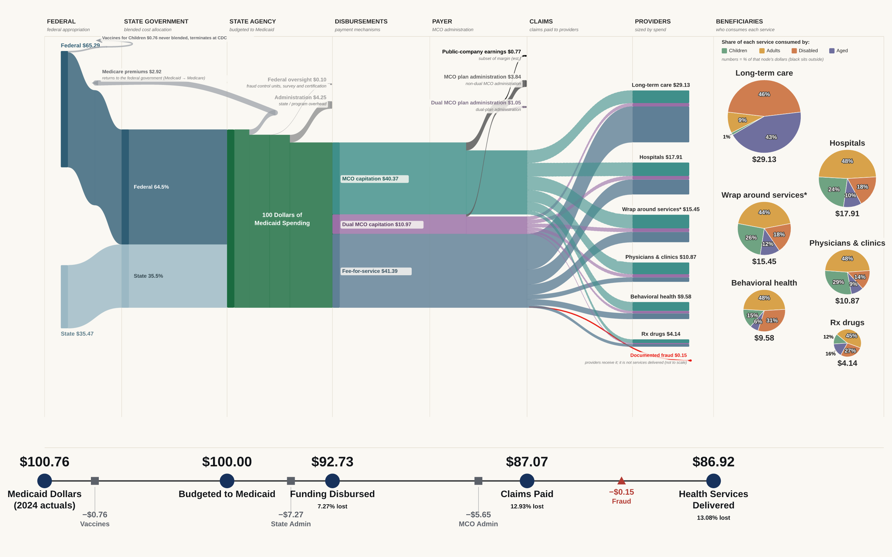
One hundred dollars of Medicaid spending in FY2024, followed from the appropriation that funds it to the service a person receives.
Stated once, here, and not repeated.
Views read in dollars and cents per hundred dollars of Medicaid spending. This makes them comparable, and it keeps price growth out of both.2
The FY2024 view is measured. Its figures come from CMS-64 national totals and MACPAC MACStats. Where a figure inside it is derived or estimated, the footnote at that figure says so.
The FY2030 view is modeled in full. Not only the warm bands that carry the law, but the ordinary-looking numbers as well: managed care capitation, long-term care, the beneficiary shares. FY2030 spending before HR-1 is a projection, and the structure of that spending is FY2024 structure carried forward.
Everything the authors know about the project’s limits is in the footnotes and in the register under Limits and sources.
Of every $100 of total Medicaid spending in FY2024, $64.70 was federal and $35.30 was state. That ratio is the blended federal share, the weighted average of what Washington paid across every state and every eligibility category. It is not a single statutory rate. The federal medical assistance percentage, or FMAP, runs from 50 percent in the wealthiest states to roughly 77 percent in the poorest. Adults covered through the Affordable Care Act expansion match at 90 percent wherever they live. The 64.7 percent blend is what falls out of all of it.3
Two things come off the top before a dollar can become a payment.
State and program administration takes $5.07. Eligibility systems, claims processing, staff, and the federally matched administrative expenditure that runs the program.
Medicare premiums take $2.90. This is the one flow on either diagram that travels backward. For people enrolled in both programs, Medicaid pays the Medicare premium, so the dollar leaves Medicaid and returns to the federal government as Medicare revenue.
$92.03 is disbursed, with $7.97 absorbed before it.
Managed care capitation, $40.06. The state pays a health plan a fixed monthly amount per enrolled person and the plan carries the risk of what that person actually costs. The payment is made whether the person sees a doctor or not.
Dual-plan capitation, $10.89. The same mechanism for people enrolled in both Medicaid and Medicare. It is carved out because the plans are different, the populations are far more expensive, and the law will treat them differently.
Fee-for-service, $41.08. The state pays providers directly, claim by claim, at a rate it sets. Forty-one cents of every Medicaid dollar still moves this way, which surprises readers who work entirely inside managed care.
This national view greatly simplifies what is happening at state and local level around managed care and fee-for-service splits. A reader's own ecosystem may look quite different from the national average. These views are a baseline against which local conditions can be compared.
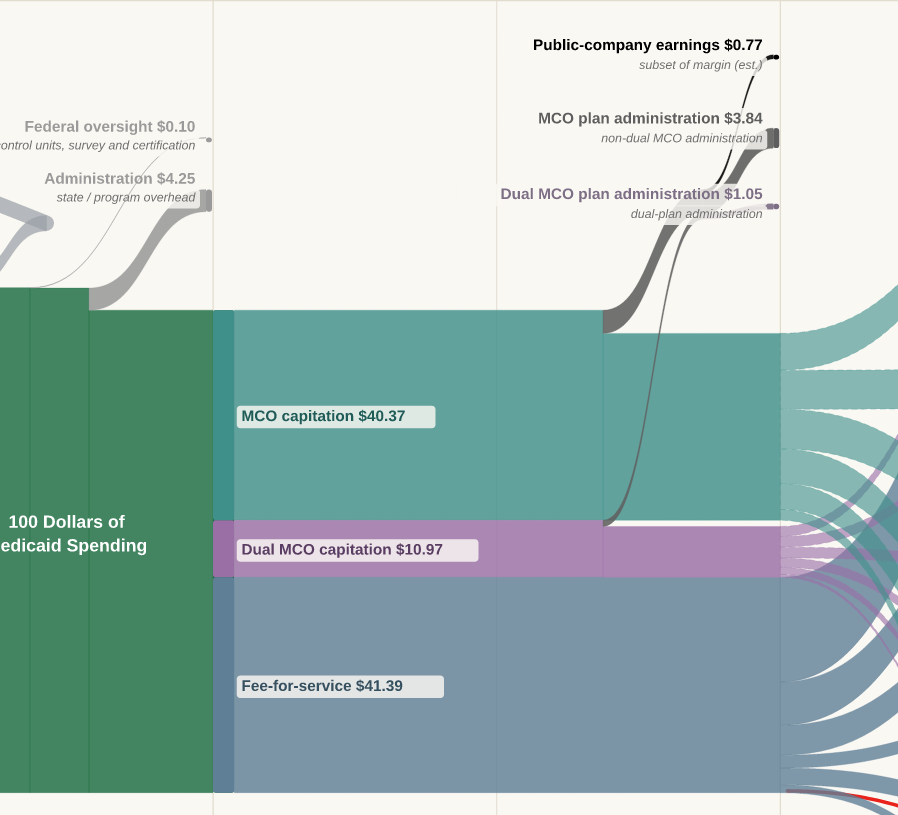
Of the $50.95 that goes to plans, $45.34 leaves as claims and $5.61 does not. That $5.61 is the plans' margin: the difference between the premium received and the medical care paid for. It is measured, and it splits two ways.
Plan administration, $4.85, made up of $3.81 on non-dual managed care and $1.04 on dual plans. Administrative load inside a capitation rate is bounded by the medical loss ratio floor, which requires states to set rates such that plans spend at least 85 percent of the premium on medical care. Administration is struck as a percentage of premium, which matters later.
Public-company earnings, $0.76. Retained earnings at the publicly traded plans.4
$86.42 is paid in claims, 13.58 percent absorbed before it.
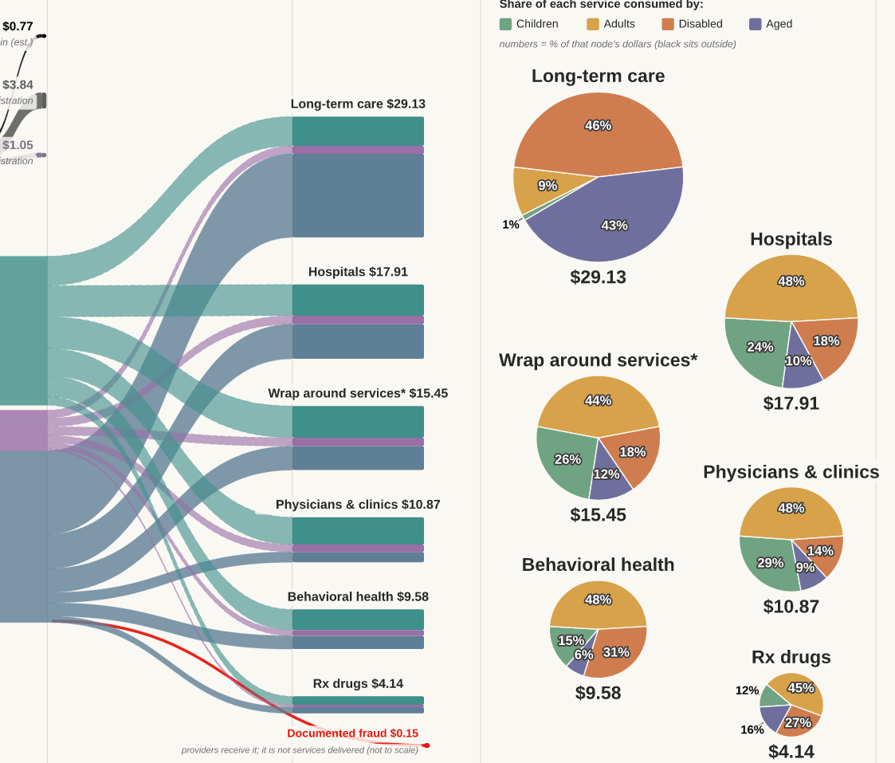
| Service | Per $100 | Share of claims |
|---|---|---|
| Long-term care | $28.53 | 33.0% |
| Hospitals | $18.66 | 21.6% |
| Wrap around services | $13.33 | 15.4% |
| Physicians and clinics | $12.63 | 14.6% |
| Behavioral health | $9.51 | 11.0% |
| Prescription drugs | $3.76 | 4.4% |
| Claims paid | $86.42 | 100% |
Long-term care is the largest single block, at a third of all claims paid. Medicaid is the primary payer for nursing facility and home and community-based care in the United States, and no other payer comes close. Hospitals, which dominate most conversations about Medicaid, take roughly two thirds of what long-term care takes.
Wrap around services is a residual by construction. It is the plain-language label for everything the source data does not break out separately. It is larger than physicians and clinics, which says something about how much of Medicaid does not fit the standard taxonomy.
Documented fraud takes $0.15. It is raised in every conversation about Medicaid spending, and it is worth seeing next to the $7.97 of administration sitting four phases to its left.
Measured across all six services in FY2024, of every $100 of Medicaid spending, children received $13.48, adults $29.56, people qualifying through disability $24.98, and people aged 65 and over $18.41.5
The relationship between those figures and enrollment is the most useful thing on that phase. Children are the largest enrolled group and the cheapest. People qualifying through disability and people over 65 are together about a quarter of enrollment and receive roughly $43 of every $100 spent. A provision that reduces enrollment removes far less spending than it removes people. A provision that touches the aged or the disabled does the reverse.
Before HR-1 does anything, $86.27 of every $100 of Medicaid spending becomes a health service, and $13.73 does not. That $13.73 is the figure to hold, because the law will raise it to $22.21, and a cut applied to an ecosystem already carrying fourteen percent of overhead does not behave the way most readers expect.
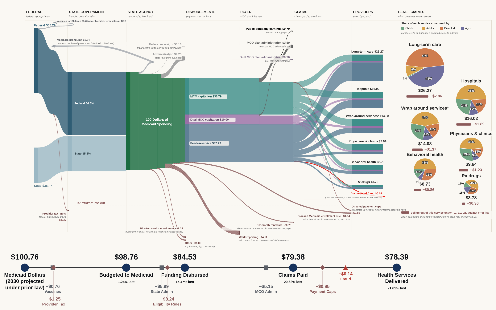
HR-1 will remove $10.26 of every $100 of Medicaid spending in FY2030, through seven provisions that leave the ecosystem at four different phases, on four different statutory schedules. They are taken here from largest to smallest.
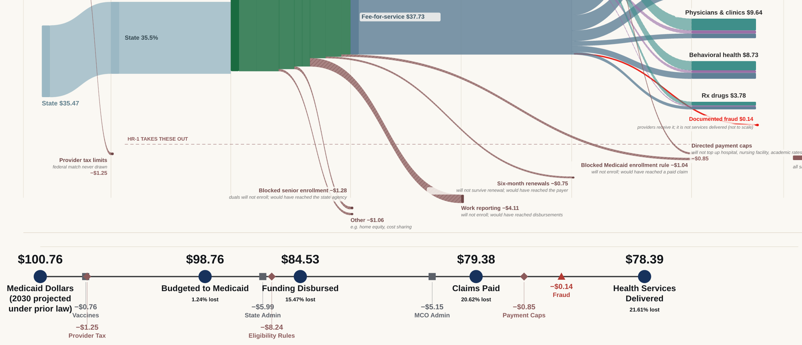
The provisions do not all start at once and they do not all reach full force at once. Two enrollment moratoria took effect on enactment. Work reporting begins in January 2027 and its good-faith exemptions expire at the end of 2028. The provider tax safe harbor steps down half a percentage point a year from FY2028 and does not bottom out until FY2032. The directed payment cap grinds down grandfathered payments ten points of the original amount each year with no statutory end date.
Pick a year too early and most of the law has not happened. In FY2028 and FY2029 only twenty percent of the ten-year overlay is at full statutory effect. Pick a year too late and the picture is dominated by the two slowest provisions. FY2030 is where 62.6 percent of the ten-year effect is at full force, every provision has started, and the two still ramping are ramping visibly.
FY2030 will not be the worst year. Provider tax limits will be at 60 percent of their eventual effect and directed payment caps at 50 percent. The $10.26 is a figure from the middle of the change, not the end of it.
| Provision | Section | Per $100 | Leaves at | Ramp, FY2030 |
|---|---|---|---|---|
| Work reporting | §71119 | $4.08 | Disbursements | full |
| Blocked senior enrollment | §71101 | $1.27 | State agency | full |
| Provider tax limits | §71115 | $1.24 | Federal band | 60% |
| Everything else | residual | $1.05 | State agency | full |
| Blocked Medicaid enrollment | §71102 | $1.03 | Claims | full |
| Directed payment caps | §71116 | $0.85 | Claims | 50% |
| Six-month renewals | §71107 | $0.75 | Payer | full |
| Removed by the law | $10.26 |
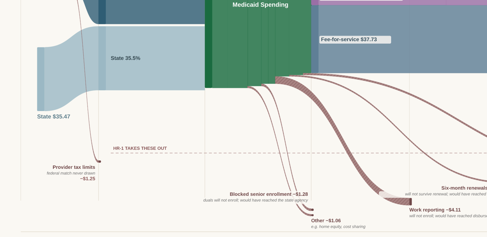
The largest provision by a factor of three. States must impose work and community engagement requirements from January 2027. Good-faith-effort exemptions expire no later than 31 December 2028 and may not be renewed, which is why it is at full effect in FY2030 and not before.
The dollars leave at the disbursement phase because many people who would formerly have been enrolled will not be enrolled under the new provisions. There is no claim to deny and no rate to cut. Every funding stream downstream, capitation and fee-for-service alike, is narrower as a result, which is why this one provision moves all six provider bars.
A moratorium in force from enactment through October 2034. Dual eligibles who would have enrolled will not.
This provision matters more than its size suggests because of where the money lands. A dual eligible who does not enroll in Medicaid does not stop being enrolled in Medicare. What stops is Medicaid paying their Medicare premium and their cost sharing. It reduces no provider's revenue in the first instance. It converts a Medicaid payment into an out-of-pocket obligation for a person over 65 on a fixed income.
The visible consequence is the Medicare premiums ribbon falling from $2.90 in FY2024 to $1.63 in FY2030. That is a reduction in Medicaid outlay that buys nothing, removes no waste, and shifts a bill to dual-eligible households.
The only provision that leaves before the federal and state shares merge, and the only one about how a state finances its own share rather than about who is enrolled or what is paid.
States finance much of their share by taxing providers and using the receipts to draw federal match. HR-1 freezes the applicable percentages for fiscal years beginning on or after 1 October 2026 and, in expansion states, steps the safe harbor down half a point a year from 6.0 percent, reaching 4.5 percent in FY2030 and 3.5 percent from FY2032. Less provider tax means less state share, and less state share means less federal match.
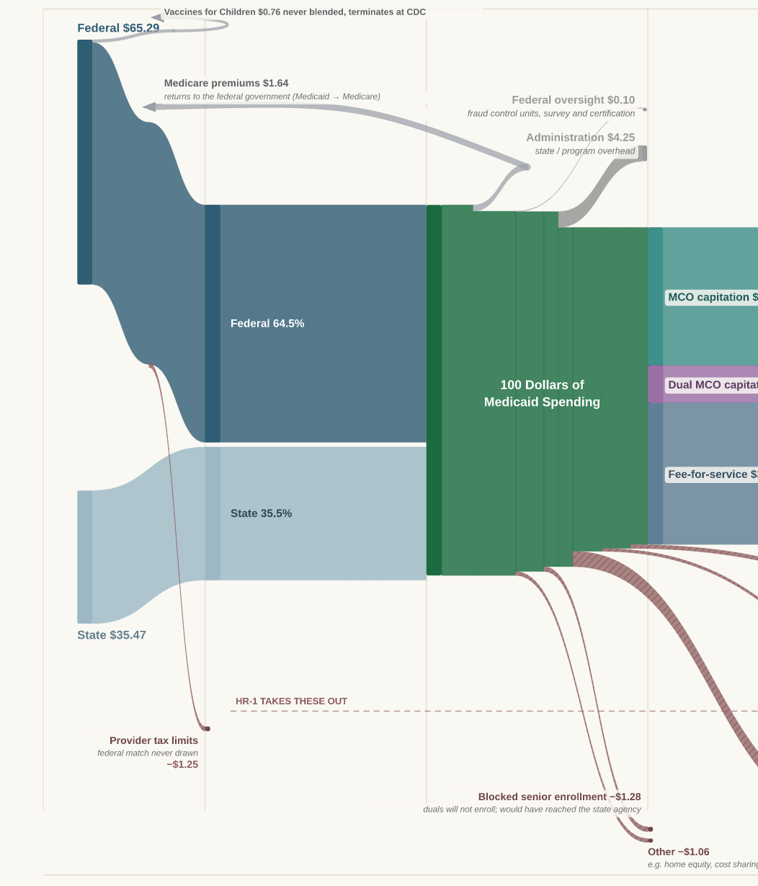
The Everything else category contains at least eleven separate provisions reducing the Medicaid funding stream in four different phases, some running in opposite directions, published by the Congressional Budget Office as a single figure. Cost sharing requirements bite from October 2028. Alien eligibility restrictions bite from October 2026. Retroactive coverage changes bite from January 2027. On top of those sit CBO's own interaction adjustments between provisions.
The examples printed on the ribbon are examples. They are not a decomposition.6
The companion moratorium to the senior rule, also in force from enactment. People who would have enrolled will not. It terminates at the claims phase because the dollar would have become a paid claim.
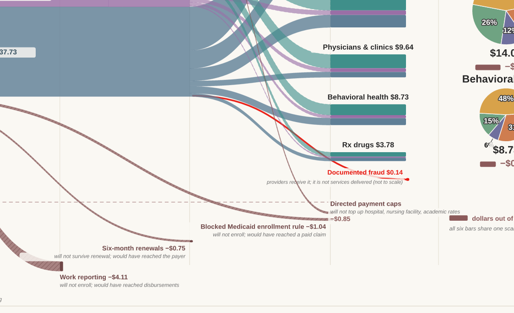
State directed payments are arrangements under which a state requires its managed care plans to pay certain providers at specified rates, typically well above the plan's ordinary contracted rate. HR-1 caps non-grandfathered payments for rating periods beginning on or after 4 July 2025, and grinds grandfathered payments down by ten percentage points of the original dollar amount each year, not compounding, from the first rating period on or after 1 January 2028, until the 100 or 110 percent Medicare limit is reached.
It comes out of the capitated leg, because a directed payment is by definition an instruction to a plan. A state with a small managed care footprint is barely touched. A state that runs nearly all of its Medicaid through plans is exposed across nearly all of it.
It is also the one provision that names the providers it affects: hospital, nursing facility and academic rates. That naming is why three of the six provider bars fall at a statute-specific rate and the other three do not.
Renewals initiated on or after 1 January 2027 move from a twelve-month to a six-month cycle. Doubling the frequency of a renewal doubles the number of opportunities to lose coverage for procedural reasons rather than for eligibility reasons.
No provision in HR-1 addresses managed care. Plans lose 8.85 percent of everything that reaches them anyway.
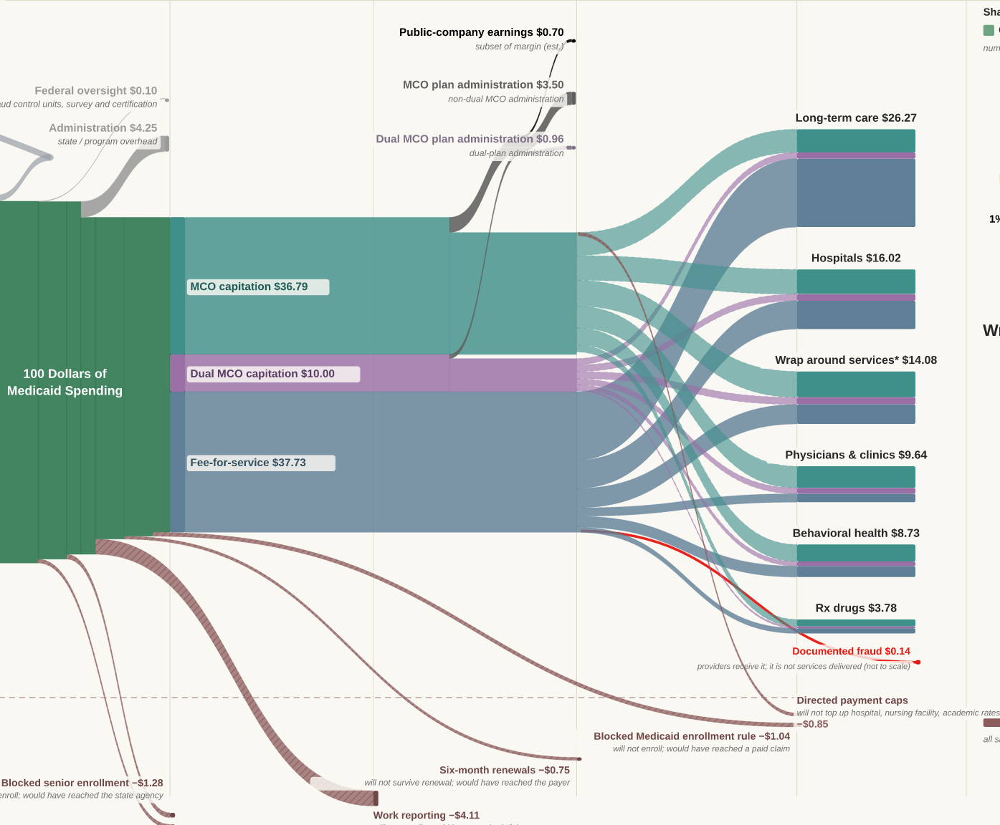
| Flow | FY2024 | FY2030 | Fall | Modeled rate |
|---|---|---|---|---|
| Fee-for-service | $41.08 | $37.44 | $3.64 | 8.85% |
| Managed care capitation | $40.06 | $36.52 | $3.54 | 8.85% |
| Dual-plan capitation | $10.89 | $9.93 | $0.96 | 8.85% |
| Plan administration | $4.85 | $4.42 | $0.43 | 8.85% |
| Public-company earnings | $0.76 | $0.69 | $0.07 | 8.85% |
| Claims paid | $86.42 | $78.77 | $7.65 | 8.85% |
Administrative dollars fall with premium; administrative obligations do not. Load sits inside the capitation rate as a percentage of premium, so a smaller base yields a smaller administrative dollar without anything being negotiated. Network management, rate setting and regulatory reporting do not shrink because membership did.
Both sides of the medical loss ratio move at once. Fewer members, a smaller premium base, and a risk pool whose composition changes as eligibility changes remove the members easiest to disenroll rather than the members cheapest to cover.
Under prior law no money left at claims. A claim was paid or it was not. Under HR-1, $1.88 leaves here: $1.03 of blocked enrollment and $0.85 of capped directed payments. It is the only money in the lifecycle removed after the point where a service could already have been rendered, and it is what a provider's accounts receivable sees first. Where a plan holds directed payment arrangements the cap is an instruction to carry out, and the plan rather than the state renegotiates with the provider. That creates a new misalignment of financial incentives between a plan and its providers.
Every provider category loses revenue under HR-1. What differs is the mechanism that reaches them, how fast it arrives, and whether there is anything they can do about it.
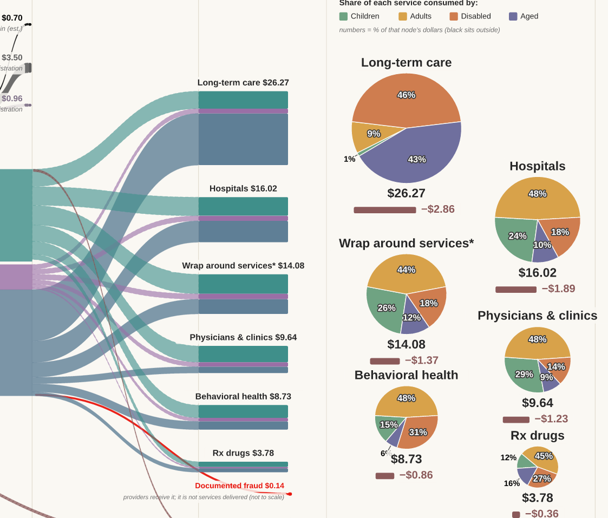
The top three carry the directed payment cap on top of the general contraction. The bottom three fall at the undifferentiated rate.8
| Service | FY2024 | FY2030 | Fall | Modeled rate |
|---|---|---|---|---|
| Physicians and clinics | $12.63 | $11.22 | $1.41 | 11.14% |
| Hospitals | $18.66 | $16.71 | $1.95 | 10.43% |
| Long-term care | $28.53 | $25.75 | $2.78 | 9.73% |
| Wrap around services | $13.33 | $12.15 | $1.18 | 8.85% |
| Behavioral health | $9.51 | $8.67 | $0.84 | 8.85% |
| Prescription drugs | $3.76 | $3.43 | $0.33 | 8.85% |
| Health services delivered | $86.27 | $77.79 | $8.48 | 9.83% |
The rate in the table above is a national average. Actual exposure depends on the state's expansion status, its managed care penetration, the organization's own payer mix, whether it currently receives a directed payment, and how far above the Medicare limit that payment sits. Two hospitals in neighboring states can face materially different outcomes from the same statute.
What the table does support is a sense of sequence. Volume effects will arrive first, through 2027 and 2028, as work reporting and the enrollment moratoria reduce covered lives. Rate effects will arrive later and on a published schedule, as the directed payment grind works through from January 2028. An organization carrying both is facing two different problems with two different timelines, and only the second one can be planned against with any precision.
The practical consequence is that contract renegotiation with plans becomes the central lever for organizations with directed payments, and cost structure becomes the central lever for organizations without them.
Health services delivered will fall from $86.27 to $77.79 per $100 of Medicaid spending, and the fall will be uneven across the six categories. A dollar that does not reach a hospital is a hospital service that is not delivered.
At $2.78 long-term care takes more of the fall in dollars than any other category, because it is the largest category to begin with. It is also the category with the fewest substitutes. A person who loses a physician visit can often defer it. A person who loses a nursing facility placement or a home and community-based services package does not have an alternative arrangement available on the same terms.
It falls at the undifferentiated rate, which means nothing in HR-1 singles it out and nothing in HR-1 shields it. Its $0.84 is small in the ledger and close to a tenth of a category that was already the least well supplied in most state programs.
Of the seven provisions, six reduce what somebody is paid. One converts a Medicaid payment directly into a household obligation.
Blocked senior enrollment will remove $1.27, and the visible consequence is the Medicare premiums ribbon falling from $2.90 to $1.63. Dual eligibles who do not enroll in Medicaid remain enrolled in Medicare. Their Part B premium does not stop being owed. It stops being paid by Medicaid and starts being paid by a person over 65 living on a fixed income, along with the cost sharing Medicaid would have covered.
No provider loses revenue in that transaction and no service is cut. A bill moves. It is the clearest statement in the ledger of what "removed from Medicaid" can mean.9
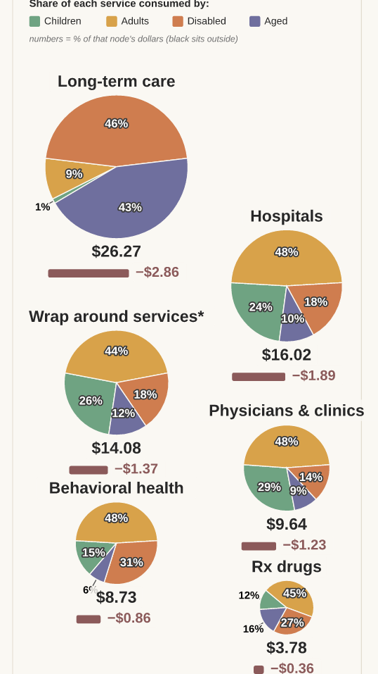
Three things this analysis could not do, and what we intend to do about each.
The per-state series. Everything in Sections VI and VII is a national aggregate, and almost every operational decision a reader has to make is a state decision. Expansion status, managed care penetration, provider tax structure and directed payment exposure vary enormously, and they compound rather than cancel. The state editions carry the same eight phases and the same four anchors with that state's numbers in them. A District of Columbia edition is furthest along. Tell us which state you need.
Where the removed dollars land. Saying how the loss divides across care not sought, uncompensated care, out-of-pocket spending and state and local absorption requires evidence that does not exist at national scale today. We will publish the method before the numbers.
Incidence by eligibility category. The most asked question about this law is who bears it. This is not published, and we are pursuing it.
Corrections and challenges are welcome and will be answered in print.
Eight limits that change how a figure on these pages should be read. The full sourcing register, every figure with its vintage and basis, is online.
| Provider tax | The $1.24 blends two mechanisms and carries no gross-up. It understates. |
| Everything else | A residual of at least eleven provisions across four phases, some running opposite to each other. |
| Earnings carve | The $5.61 payer margin is measured. The $0.76 earnings split inside it is estimated, and counts investor-owned plans only; nonprofit plans fall outside it. |
| Class incidence | The FY2030 beneficiary shares are the FY2024 shares scaled by one multiplier. All four fall by the same 9.83 percent as an artifact of that scaling, which carries no information about who bears the law. |
| Service incidence | Only §71116 names providers. For the other six provisions, the fall at a given bar is the sum of several mechanisms in proportions nobody has published. |
| Price growth | Withdrawn from the diagrams by construction. It cannot be recovered by differencing two spending projections. |
| Conservation | One-cent defect in the FY2024 dual-plan lane. |
| FY2030 | Every figure on the to-be diagram is modeled, including the ordinary-looking ones. |
Primary sources: Congressional Budget Office supplemental of 28 October 2025 and letter of 5 March 2025; CMS-64 financial management reports; MACPAC MACStats, February 2026; P.L. 119-21, Title VII, Subtitle B; annual filings of the publicly traded managed care organizations. Full register at the address on the back page, matched to build main@2026-09-11.
The two diagrams are produced by a model the firm wrote. The ledger, the geometry and the balance line are code, and every figure in this paper is read from that code at build time rather than typed into the prose. Claude, made by Anthropic, was used throughout as an analyst and drafting partner: working through the statutory phase-in schedules, deriving the provision allocation, building and auditing the rendering pipeline, and drafting these sections.
No figure here was supplied by a language model from memory. Statutory dates and CBO figures are taken from the documents and recorded with their vintages. What the analysis claims, and what it declines to claim, was decided by the named authors.
1. A dollar removed from the ecosystem becomes one of at least four things: care not sought, care delivered and written off, care paid out of pocket, or a cost absorbed by a state or local budget. No national source splits those four. One randomised finding is relevant and is deliberately not applied to any figure in this paper: the Oregon Health Insurance Experiment implies people losing coverage reduce medical spending by roughly a quarter against what they would have spent with it. That is a causal estimate for able-bodied adults below the poverty line who wanted coverage, close to the population work requirements reach. It establishes that utilization falls. It says nothing about what happens to the portion that does not fall.
2. Both diagrams read in dollars per one hundred dollars of Medicaid spending: the FY2024 diagram divides actual FY2024 spending, the FY2030 diagram divides projected FY2030 spending before HR-1. The point is comparability. The same denominator governs both, so every node sits in the same place and every band means the same thing, and when the state editions publish a state Medicaid executive will be able to compare their own $100 against this national baseline. The cost is that the hundred dollars is a unit rather than an amount of money: medical prices will rise between 2024 and 2030 and Medicaid spending will rise with them, and dividing by the total removes anything that moves the numerator and the denominator together. Reinserting price growth as a deduction near the provider end of the FY2030 diagram applies a price level to an index number, which is a mixed-basis comparison and produces a figure that reconciles with neither diagram. The quantity that belongs to the margin question is a ratio rather than a level: the gap between growth in Medicaid payment and growth in provider input costs. That requires a provider input-cost measure such as a CMS market basket index set against the CBO payment path. It cannot be constructed by differencing CBO's five percent against the CMS Office of the Actuary's 5.8 percent per-enrollee projection, because both are projections of spending rather than measures of cost.
3. The federal share was 69 percent in FY2023 and fell to 64.7 percent in FY2024 as the enhanced match from the public health emergency unwound. A baseline built on FY2023 carries a structurally wrong split between Washington and the states, and every leverage figure downstream of it inherits the error.
4. The $5.61 payer margin is measured and the ledger conserves whatever the split inside it. The $0.76 earnings carve is estimated and has not been reconciled to Medicaid segment disclosures. Nothing downstream of the payer phase moves if the carve changes. Because this band counts publicly traded plans only, retention by nonprofit and provider-sponsored plans sits inside the $4.85 labelled plan administration.
5. These four totals are measured for FY2024 and describe composition: who the money reaches today. They do not support a claim about incidence: who loses money under the law. See note 9.
6. How much of the $1.05 is cost sharing, how much is alien eligibility and how much is retroactive coverage is not published. CBO's interaction adjustments between provisions are not separable from the provisions themselves.
7. This is an assumption. Eligibility systems, staff and claims processing do not obviously shrink when a caseload does, and the law is silent. If it is wrong, the entire overhead picture moves.
8. Physicians and clinics, hospitals and long-term care carry the §71116 directed payment cap on top of the general contraction, in proportion to how much of each one's Medicaid revenue arrives through a directed payment in the capitated leg. Wrap around services, behavioral health and prescription drugs all fall at exactly 8.85 percent, which is the undifferentiated eligibility-side rate. Three services landing on an identical rate to two decimal places is the absence of a service-specific finding rather than the presence of one. The six rounded falls sum to $8.49 against a balance difference of $8.48; the difference is rounding at the second decimal and the ledger conserves exactly.
9. How the loss falls across children, adults, the disabled and the aged is not published, and we are pursuing it. The mechanisms point in directions that do not cancel, which is why no estimate appears here. Work reporting, the largest provision at $4.08, applies to expansion adults and largely exempts the aged and people qualifying through disability. Blocked senior enrollment falls only on the aged. Directed payment caps fall on hospital, nursing facility and academic rates, which reach the aged and the disabled far more than they reach children. Splitting the $8.48 across four categories using FY2024 shares would publish an assumption as a finding.
10. A reader of Figure 5 can watch a provider bar shrink and cannot see which of the seven levers did the shrinking. The diagram draws a bar that shrank because people lost coverage identically to a bar that shrank because a rate was capped. The first means care not delivered; the second means the same care delivered for less money.